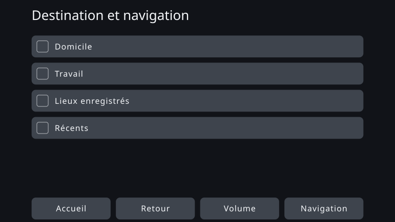

Personal Fit UI - Optimisation individuelle de l’interface utilisateur par la conception sous contraintes
août 2026
Aperçu
Tout le monde se sert de la même interface de la même manière. Ce travail s’écarte de cette prémisse de la production de masse et demande si l’on peut, à la place, générer une interface ajustée aux caractéristiques cognitives, sensorielles et physiques d’une seule personne.
L’objectif n’était pas une interface dont l’écran changerait sans cesse selon la situation en cours d’usage. Il s’agit d’un mécanisme qui saisit les caractéristiques d’une personne au moment où elle commence à utiliser le produit et génère à l’avance une interface qui lui convient, tout en respectant les contraintes de sécurité et d’accessibilité.
Ce travail met en pratique une idée que j’appelle la conception sous contraintes. À partir de la littérature et des normes, l’humain conçoit les directions à suivre et les limites à ne pas franchir. À l’intérieur de ce cadre, l’IA fixe les valeurs et les formulations concrètes, et ce qu’elle produit est vérifié pour s’assurer qu’il n’enfreint pas le cadre.
La preuve de concept a pris pour sujet un système de navigation automobile et a généré une interface pour treize personas aux caractéristiques différentes. Presque rien n’a changé visiblement. Le gain est venu d’ailleurs : en écrivant les contraintes sous une forme vérifiable, on a vu où subsiste une marge d’individualisation et où les contraintes la consomment.
Ce que signifie donner à tous la même interface
La plupart des produits sont aujourd’hui conçus sur l’hypothèse de la production de masse : une seule interface, couvrant le plus de monde possible. Même lorsque la taille du texte ou le nombre d’éléments affichés peuvent être modifiés, c’est à l’utilisateur de trouver l’état qui lui convient et de le régler.
Cela fonctionne pour beaucoup de gens. Mais convenir à beaucoup et convenir à tous ne sont pas la même chose. Un produit peut satisfaire toutes les normes de conception communes et laisser malgré tout des personnes pour qui cette interface reste difficile à utiliser.
La même structure apparaît dans l’évaluation des interfaces embarquées. La procédure d’acceptation de la NHTSA américaine, portant sur les regards détournés pendant la conduite, n’exige pas que tous les participants satisfassent au critère. Une tâche est validée lorsque 21 participants sur 24 le respectent : qu’une partie d’entre eux échoue est donc inscrit d’avance dans le dispositif. Un document remis au régulateur par des constructeurs va plus loin et rapporte qu’environ une personne sur six détourne le regard plus longtemps, de façon constante, sur plusieurs tâches. Ce document émane des constructeurs soumis à la réglementation et demandait un assouplissement du critère. Ce qui est proposé ici ne vise pas à assouplir le critère, mais à augmenter, par l’individualisation, le nombre de personnes capables de le satisfaire.
L’intérêt d’une interface individualisée n’est pas de rendre l’écran de chacun inédit. Il est de faire entrer les personnes qu’une interface uniforme laissait de côté dans le domaine où elles peuvent s’en servir et la manœuvrer en sécurité.
Jusqu’ici, le coût de la conception d’une interface pour une seule personne n’était pas réaliste. Depuis que l’IA peut être traitée comme une partie du processus de conception, cette prémisse commence à changer.
La navigation automobile comme sujet
Le sujet de ce travail n’est pas la navigation automobile, mais l’interface individualisée. La navigation a été choisie comme un cas permettant d’en examiner les possibilités et les limites.
Une interface embarquée est soumise à de fortes contraintes : un écran limité, un temps de regard très bref, la sécurité de chaque manipulation. Avant la mise sur le marché, elle est validée comme interface uniforme utilisable par le plus grand nombre — et cette même interface est ensuite remise aux personnes à qui cette conception ne convient pas.
Si l’individualisation tient dans un domaine aussi étroitement contraint, l’idée de conception sous contraintes peut être éprouvée concrètement. À l’inverse, il se peut que les contraintes ne laissent presque aucune liberté à l’IA. Le sujet permet d’observer les deux.
Au Japon, en 2026, coexistent des modèles compatibles avec les mises à jour à distance et des systèmes de navigation montés en usine qui n’en acceptent aucune. Et même lorsque les données cartographiques peuvent être mises à jour, la structure de base de l’interface n’est pas nécessairement reconçue encore et encore après l’achat. Cette preuve de concept suppose un système dont l’interface n’est pas fréquemment mise à jour une fois l’usage commencé.
Faire de l’individualisation quelque chose qui puisse être généré
La conception sous contraintes consiste à fixer clairement le cadre, puis à laisser l’IA s’y mouvoir avec souplesse et avec le sens de la nuance. À la différence d’un mécanisme paramétrique qui extrait des valeurs d’une table établie, ce que l’on conçoit ici, c’est l’étendue même des solutions que l’IA peut explorer.
Les connaissances scientifiques ne vont pas toujours jusqu’au chiffre. Elles n’indiquent parfois qu’une direction : agrandir, montrer moins. Là où la valeur est déterminée, elle est calculée comme une règle ; là où seule la direction est connue, l’IA fixe le détail dans les limites autorisées. Ne pas laisser cette distinction s’estomper fait partie du mécanisme.
Fixer les dimensions cognitives
Définir les axes comme des caractéristiques liées à la facilité d’usage, et non comme des diagnostics : mémoire de travail, résistance aux distractions, vision et audition, dextérité manuelle.
Table de correspondance
Relie les caractéristiques de l’utilisateur aux paramètres de l’interface qui doivent bouger : quelle caractéristique déplace quoi, dans quel sens, et sur quelles bases.
Connaissances et normes
Rassembler les critères de sécurité, les normes d’accessibilité, les acquis des sciences cognitives et les principes généraux de conception d’interfaces.
Ensemble de contraintes
Les conditions que tout résultat généré doit respecter. Écrites non comme des principes, mais sous une forme où l’on peut vérifier : satisfait ou enfreint.
Espace de conception
Tout ce que l’interface peut faire varier : taille du texte, cibles tactiles, nombre d’éléments affichés, hiérarchie de l’information, notifications, vocabulaire, ordre, regroupement. La table de correspondance donne le sens du réglage ; l’ensemble de contraintes retire les solutions interdites.
L’IA concrétise à l’intérieur du cadre
Dans la liberté qui subsiste, elle fixe les valeurs, le vocabulaire, l’ordre et les regroupements. Une vérification distincte confirme l’adéquation au cadre, et seule une interface individualisée qui satisfait toutes les conditions est produite.
Preuve de concept — une interface pour treize personas
La preuve de concept a réuni treize personas dont les combinaisons de caractéristiques diffèrent. Elles ne reproduisent aucune distribution réelle d’utilisateurs : ce sont des points de grille, où les caractéristiques ont été placées délibérément afin de repérer lesquelles font bouger l’interface.
Pour chaque persona, l’interface uniforme commune constitue le before, et l’interface générée à partir de ses caractéristiques, le after.
Un cas où presque rien n’a changé
PS-01 — référence (âge mûr, profil typique)
Cette persona se situe dans la plage typique pour toutes ses caractéristiques cognitives, sensorielles et physiques. Après individualisation, le texte est légèrement plus grand, mais le nombre d’éléments affichés, la disposition et la taille des zones tactiles restent pratiquement inchangés.
Interface uniforme (before)
Interface individualisée (after)
Un cas où le changement est visible
PS-12 — âge mûr, faible dextérité manuelle (sensoriel et cognitif typiques)
Cette persona partage avec PS-01 l’âge ainsi que les caractéristiques sensorielles et cognitives ; seule la dextérité manuelle est faible. Dans le after, les cibles tactiles grandissent et le nombre d’éléments affichés sur un écran passe de sept à quatre. Les autres sont renvoyés à l’écran suivant, ce qui est précisément ce qui assure à chaque cible sa taille.
Interface uniforme (before)

Interface individualisée (after)

La littérature indique la limite inférieure que doit respecter une cible tactile, ainsi que le sens dans lequel l’agrandir lorsque la précision du geste est faible. Elle ne fixe pas de manière univoque de combien l’augmenter pour cette personne-là. C’est cette part indéterminée que l’IA a concrétisée, dans les limites des contraintes.
Ce qu’a donné la preuve de concept
Un changement nettement visible n’a été constaté que pour PS-12, une persona sur treize. Pour la plupart d’entre elles, l’interface uniforme du before fonctionnait déjà assez bien ; le bénéfice de l’individualisation n’est presque pas apparu, du moins sous une forme reconnaissable à l’écran.
PS-12 permet de montrer l’individualisation visuellement, mais un changement de cette ampleur reste à la portée des réglages d’affichage et d’accessibilité que proposent déjà les produits existants. Offrir d’emblée un état ajusté, sans que l’utilisateur ait à le régler lui-même, a du sens. On ne peut pas dire pour autant qu’ait été créée une interface inédite que seule une IA aurait pu proposer.
Je n’ai pas conclu de ce résultat que l’individualisation par l’IA avait réussi.
Pourquoi l’écart n’est pas apparu
La cause tient à l’étroitesse de l’espace de conception satisfaisant aux contraintes.
Une interface embarquée comporte de très nombreux planchers et plafonds de sécurité. Le texte et les cibles tactiles doivent dépasser une certaine taille, et la quantité d’information affichable sur un écran a une limite haute. En les appliquant l’une après l’autre, il ne restait à l’IA que peu de solutions parmi lesquelles choisir.
La plupart des éléments concrétisés par l’IA relevaient aussi, à cette échelle, de ce qu’une personne peut décider une fois pour toutes et figer dans une petite table de correspondance. Cela ne veut pas dire que l’IA était inutile : elle a comblé des valeurs concrètes que la littérature n’indique pas. Mais il lui restait trop peu d’options à explorer.
En revanche, la reformulation du vocabulaire conservait une large liberté. Seulement, ces différences se voient mal dans la composition de l’écran : le domaine où l’humain pouvait percevoir la valeur et celui qui échappe à l’écriture de règles ne se recouvraient pas.
Le résultat est apparu dans le cadre, non dans l’interface
Le plus grand acquis de cette preuve de concept est né avant la génération des interfaces, à l’étape où les contraintes sont conçues. En transcrivant normes et littérature sous forme de conditions vérifiables par la machine, plusieurs incohérences sont apparues dans le cadre lui-même.
- Des normes différentes donnaient des limites inférieures différentes pour un même élément d’interface.
- La condition « ne s’applique qu’en roulant » n’avait aucun endroit où être inscrite dans la spécification.
- Deux axes de conception en réalité indépendants avaient été fondus en un seul, si bien que les contraintes éliminaient presque toutes les options.
- L’IA n’avait pas reçu d’indication assez claire sur quelle contrainte gouverne quelle sortie, et des conditions sans rapport entraient dans ses décisions.
- Des jugements qui auraient dû rester à l’IA étaient figés du côté de l’implémentation, rapprochant la conception sous contraintes d’un simple moteur de règles.
Dans chacun de ces cas, l’IA a détecté l’incohérence et désigné l’endroit concerné, un humain a tranché, et la contrainte a été corrigée.
Autrement dit, l’acquis de ce travail tient moins au fait qu’une IA ait créé une interface inédite qu’au fait que les échanges avec l’IA ont éprouvé et mis à jour le cadre même d’où naissent les interfaces. Le rôle de l’IA dans la conception sous contraintes ne se limite pas à produire un objet fini. Il consiste aussi, avant toute génération, à repérer les collisions entre règles et les possibilités de conception effacées sans que personne l’ait voulu.
Perspectives — un cadre net, et de la place à l’intérieur
Ce que la conception sous contraintes attend de l’IA, ce n’est pas d’extraire d’une table des valeurs déjà fixées. C’est d’écarter par les contraintes ce qui est manifestement inadéquat, puis, parmi les nombreuses possibilités restantes, de proposer la solution la plus probablement pertinente — ou de montrer un schéma auquel l’humain n’aurait pas pensé d’avance.
Cet effet ne s’est pas suffisamment manifesté cette fois-ci. Non pas faute de collisions, mais parce que l’espace de conception satisfaisant aux contraintes était étroit et qu’il ne restait presque aucun sens à choisir une solution « meilleure » ou « inédite ».
La question suivante n’est pas de savoir si l’IA est efficace. Elle est : à partir de quelle largeur d’espace de conception naît l’effet que seule une IA peut produire ?
Pour la prochaine mise en pratique, je choisirai un sujet où la sécurité reste assurée, où plusieurs solutions valables subsistent et où les différences que les règles ne savent pas écrire sont reconnaissables comme une valeur par l’humain. Le cadre sera défini clairement. Mais on y laissera assez d’espace pour que l’IA puisse explorer. C’est cette conjonction qui fait de la conception sous contraintes une méthode de design pour l’ère de l’IA, et non une simple automatisation.